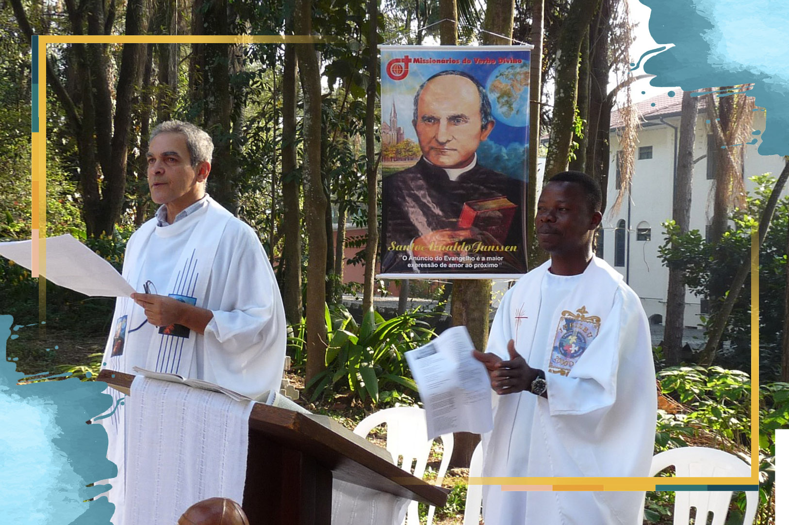

Oracoes Missionarias
A vida missionária dos ministros ordenados
24 de Outubro de 2020

Oração inicial
Espírito Santo, sopro de vida, que fazes novas todas as coisas, abre nossos corações às tuas inspirações para que, ao escutar e aprofundar tua Palavra, aumente em nós o ardor missionário e o cuidado com a Casa Comum, nossa terra, e o amor a todas as tuas criaturas, sobretudo cada pessoa criada à tua imagem e semelhança. Espírito de Sabedoria, guia nossos passos nos caminhos da missão. Amém.Reflexão
“A Igreja é, na sua totalidade, um povo sacerdotal. Graças ao batismo, todos os fiéis participam no sacerdócio de Cristo.” Mas, na base desse sacerdócio e a seu serviço, estão os ministros ordenados pelo sacramento da ordem, cuja missão é servir em nome e na pessoa de Cristo-Cabeça no meio da comunidade. Em nosso país, existem mais de 25 mil ministros ordenados (bispos, padres e diáconos).E qual a missão dos bispos e padres? O Papa Francisco explica que existe algo que configura profundamente o sacerdote ao Cristo: “Só ele está habilitado para presidir a Eucaristia”. Assim como o Senhor ia ao encontro das pessoas, como Bom Pastor, o bispo, o padre e o diácono são inspirados a agir da mesma forma. Eles são convidados a ir, a se encontrar e ficar com os seus, a agir por Jesus.
Muitos desses ministros entendem que esse “estar com os seus” é ir além das fronteiras de sua própria nação e servir ao povo de Deus em países e culturas diferentes: essa é a vocação missionária de tantos ministros ordenados.
Palavra de Deus: 1Pd 5,1-4
1 Portanto, apelo para os presbíteros que há entre vocês, e o faço na qualidade de presbítero como eles e testemunha dos sofrimentos de Cristo, como alguém que participará da glória a ser revelada: 2 pastoreiem o rebanho de Deus que está aos seus cuidados. Olhem por ele, não por obrigação, mas de livre vontade, como Deus quer. Não façam isso por ganância, mas com o desejo de servir. 3 Não ajam como dominadores dos que lhes foram confiados, mas como exemplos para o rebanho. 4 Quando se manifestar o Supremo Pastor, vocês receberão a imperecível coroa da glória.Para meditar
Nesse texto, Pedro fala das atitudes dos presbíteros em relação ao povo de Deus. É uma missão exigente e que necessita de muito amor e desprendimento. Como podemos apoiar nossos pastores para que realizem bem sua missão? Em que essa Palavra me inspira para realizar bem minha missão?
Oração do Mês Missionário
Deus Pai, Filho e Espírito Santo, fonte transbordante da missão, ajuda-nos a compreender que a vida é missão, dom e compromisso. Que Maria, nossa intercessora na cidade, no campo, na Amazônia e em toda parte, ajude cada um de nós a ser testemunhas proféticas do Evangelho, numa Igreja sinodal e em estado permanente de missão. Eis-me aqui, Senhor, envia-me! Amém.
Assista ao vídeo
Neste vídeo, vamos conhecer o testemunho do padre Lúcio Espíndola, da Arquidiocese de Florianópolis, que viveu a missão em Guiné-Bissau durante treze anos.Para rezar a novena completa com a sua família, comunidade ou grupos on-line, baixe o livrinho:
Novena Missionária 2020
Destaques
Província Stella Matutina
Rua São Benedito, 2146 - Santo Amaro - São Paulo - SP |
Tel. (11)
5547-7222


Província Spiritus Divinae Sapientiae
Rua Arnaldo Janssen, 320 - Cara-Cara - Ponta Grossa - PR
|
Tel. (42) 3326 4091